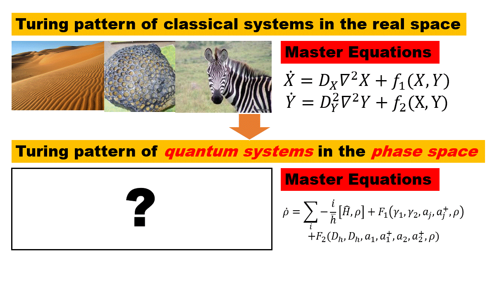

Pattern Formation and Dynamics in Quantum System (PI: Prof. Yi-Ping Huang, NTHU)
This research focuses on bridging the gap between quantum dynamics and non-linear phenomena to reveal pattern formation mechanisms in quantum systems.
Employing the quantum trajectories method and phase representation, I investigate pattern formation in both two-site and many-site quantum systems.
Anticipated outcomes involve characterizing patterns in phase space, comprehending non-linear effects, and assessing the influence of wave function patterns on quantum statistics.
In essence, this study can contribute to a more profound understanding of the interplay between non-linear dynamics, pattern formation, and statistical mechanics in quantum systems.

Turing instability is a well-known phenomenon in nonlinear dynamics.
A well-known Turing pattern.
In this paper, it's generalize this phenomenon to quantum systems in phase space. The paper provides the quantum master equation under classical limit which also can lead to Turing instability.
I use similar numerical method to simulate the evolution in phase space to make it clear.
When the Turing instability happens, the evolution in phase space would be like the following animate.
The pattern led to by the Turing instability in the phase space of quantum activator-inhibitor system.
However, we can see that though the Turing instability is identical in these systems, the Turing pattern does not emerge in the phase space.
In the phase space, the space seperates into two totally distinct phases without pattern emerging. This may be due to the master equation of the System
are almost composed by polynomials so that the the nonlinear effects of the equation is not enough. We are now try to find a quantum system that can demonstrate enough
nonlinear effect under classical limit in the phase space.